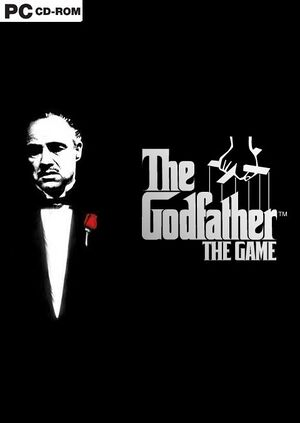
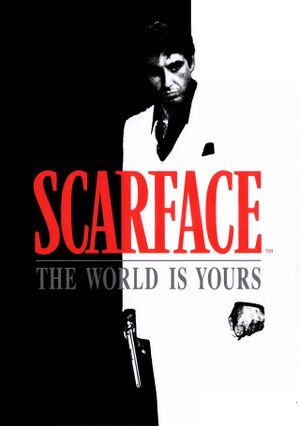
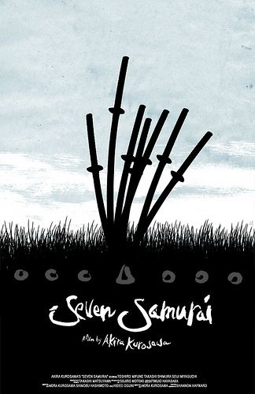

|  |
The Godfather Baba 1-2-3 (IMDb 9.2 - 9.0 - 7.6)Özetİtalya'dan Amerika'ya göç etmiş bir mafya babası olan ve Baba olarak anılan Don Corleone bulunduğu konuma gelebilmek için bir çok kişiyle savaş vermiş ve kendisine bir çok düşman edinmiştir. Büyük oğlu Sonny sinirli ve ne yapacağı belli olmayan biridir. Kızı Connie kötü bir evlilik yapmıştır ancak kocasını sevdiği için talihine boyun eğmiştir. Küçük oğlu Michael Carleone ise kahramanlık madalyası almış eski bir askerdir. Don Carleone bir gün saldırıya uğrar ve ciddi şekilde yaralanır. Baba'nın bu durumunu fırsat bilen düşmanları ailenin üzerine gelmeye başlar. Sonny ve Michael babasını ve aileyi koruyabilmek için tüm düşmanlara meydan okur. |
|  |
Scarface - Yaralı Yüz (1983) | IMDb 8.3ÖzetTony Montana isimli Kübalı suçlu, Miami’ye gelip uyuşturucu lordu Robert Loggia’nın emrinde çalışmaya başlar. Montana’nın hırsı ve öfkesi basamakları hızla tırmanıp büyük bir şuç şebekesinin başı olmasını sağlar. 170 dakikalık film, uyuşturucu dünyasının gizli kapılar ardında dönen çarklarından başlayarak suç dünyasını gözler önüne serer. |
|  |
7 Samurai - Yedi Samuray (1954) | IMDb 8.7ÖzetUsta Samurai Kambei'nin cesareti ve fedakarlığına şahit olan bir grup köylü ondan sürekli olarak haydutların baskınlarına uğrayan köylerini korumasını isterler. Kambei bu isteği herhangi bir çıkarı olmamasına rağmen kabul eder ve ilk olarak kısa süre sonra müridi olan genç samurai Katsushiro'yu, ardından da güç kullanmaya meraklı bir samurai olarak görünen, fakat sonradan bir çiftçinin oğlu olduğu ortaya çıkan Kikuchiyo'yu yanına alır. Takımına dört yeni samurai daha ekleyerek köyü savunmaya girişen Kambei köylüler tarafından sevinçle karşılanır ve herkesin sevgisini kazanır |